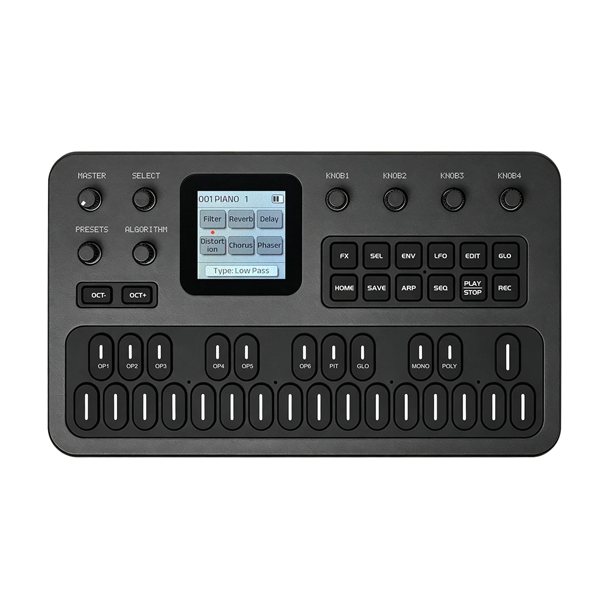

Control rate ≠ audio rate
A key scan can run thousands of times per second. Audio needs tens of thousands of samples per second, with regular timing. A UI redraw can wait; an empty audio buffer becomes a click or dropout.
A hands-on field guide to the FM-1.
Pick an action. See what happens inside.
Follow a key press, MIDI message, encoder edit or preset load through the instrument. Continue to the signal-flow chapter for the full explanation.
You know how to write code. Let’s connect it to a loudspeaker.
Start with the physical system, then follow a note, play with FM, and open the source. Each chapter ends with a small thing to try.
The buttons do not generate the sound. They change state. The processor turns that state into a stream of numbers; the audio hardware turns those numbers into voltage.
Explore the processor, controls, memory and audio connections. The official board code provides the strongest source for the software-facing hardware map.

A key scan can run thousands of times per second. Audio needs tens of thousands of samples per second, with regular timing. A UI redraw can wait; an empty audio buffer becomes a click or dropout.
Firmware and saved data live in nonvolatile storage. Active voices, sample buffers and mutable state use working memory. The exact memory layout belongs to a firmware version, not to the product name alone.
Driver code tells us which peripherals software expects. It does not prove the precise analog circuit, every chip marking, or your board revision. The map is a functional explanation, not a wiring guide.
A MIDI message is an instruction, not audio. Follow the handoffs from a key press to a block of PCM samples in the official FM1 Open application.
At the nominal 44,100 Hz rate, a 128-frame block lasts 128 ÷ 44,100 seconds. The next block must be ready on time. A stereo frame contains a left sample and a right sample.
The official driver documents an actual hardware rate of 44,118 Hz (44.1 kHz class). The round number here is a teaching approximation. This is a block interval, not measured end-to-end latency.
Illustration only. This does not benchmark your FM-1. More voices, more effects and expensive DSP can consume the available time.
Think of the main application as your Arduino loop(), with a crucial difference: a peripheral continuously consumes audio. DMA (direct memory access) transfers buffers without requiring a CPU instruction for every sample. An interrupt signals that a half-buffer needs attention.
In the official app, the audio callback renders an engine block, applies the open output mixing layer and converts/copies samples to the transmit buffer. Audio work must be bounded. Blocking storage, waiting for a lock, or printing a long debug message in the wrong context can miss the deadline.
Multiple inputs can request a note: the panel, DIN MIDI, USB MIDI, BLE MIDI or the sequencer. They converge on application/engine state. They do not each need a different physical sound generator.
Read the official audio interrupt ↗FM starts with a simple idea: use one oscillator to move another. Try it here, then scale the idea from two operators to six.
An operator is an oscillator with a level envelope. A carrier reaches the output; a modulator changes another operator’s phase or frequency. An algorithm is their connection graph. An operator’s role depends on its connections.
Timbre comes from the interaction. Changing the modulator ratio changes where spectral components land. Changing the modulation index changes their relative strengths. More modulation does not simply mean a louder sound.
Six operators form different connection graphs. Carriers reach the output; modulators change other operators.
The interactive audio lab requires JavaScript. No audio starts automatically.
Start with the Pure preset. Keep the ratio at 1:1 and raise the index slowly. New components appear at intervals related to the modulator frequency. Return the index to zero to hear the carrier alone.
Choose Bell, then compare an integer ratio with a noninteger ratio. Inharmonic partials can make a bell-like or metallic tone. “Noninteger” does not guarantee musical dissonance; rational ratios can share a lower fundamental.
Use a short attack and low sustain for a struck sound. Use a slower attack and longer release for a swell. In this lab, ADSR controls loudness; the modulation index stays fixed through the note.
y(t) = A sin(2πfct + I sin(2πfmt))This phase-modulation teaching equation combines carrier frequency fc, modulator frequency fm and index I. For a steady sinusoidal modulator it has an equivalent frequency-modulation form, with frequency deviation Δf = I × fm and a phase offset.
Components occur at fc ± n × fm, where n is an integer; their amplitudes depend on the index. This is why the sound can change even when the played note stays the same.
The real six-operator instrument goes further. The DX7 family uses per-operator multi-stage envelopes, routing algorithms and feedback. Its four-rate/four-level envelopes are not the ADSR envelope used in our small lab.
Digital sound has a ceiling. Frequencies above half the sample rate can fold back as aliasing unless the implementation handles them. The browser’s sample rate and oscillator implementation differ from the FM-1. This lab teaches the mechanism; it does not predict a hardware patch sample for sample.
Explore the public web synthesis sources ↗A guided reading of the manufacturer’s FM1 Open V14, pinned to commit 4c7496d. Start at the application boundary and follow one responsibility at a time.
Follow the shared application into a native device build or the separate WebAssembly preview.
Read the pinned official source snapshot.
Resist reading every file in order. A single behavior gives you a testable thread through the project.
Firmware can replace the synthesis engine, the interface, the sequencer and the storage format. Choose a workflow, then check the exact release and your hardware revision.
Stock V16 and FM1 Open V14 are different projects. Their version numbers are not one shared release sequence. Product-page specifications may describe earlier stock firmware. A firmware’s advertised engine count also does not tell you its usable simultaneous polyphony.
See the community resource directory for a wider landscape. The comparison here is a dated selection, not a live compatibility guarantee.
01 / Hardware
Confirm the exact board and flash chip support. Some newer FM-1 units use UC25HQ80 flash; older firmware or update routines may not recognize it.
02 / Installation route
Read the destination release’s supported migration and recovery procedure. Returning through stock may be prescribed, but there is no universal safe route for every pair of versions.
03 / Your saved work
Project formats and sample storage layouts differ. A firmware backup, a project export, a DX7 bank and a sample backup are different things. Export each kind you want to keep.
You can learn most of the architecture before the hardware arrives. Begin with the official browser workbench, then move to a local source build.
Open the manufacturer’s workbench. Try a DX7 voice, change an operator parameter, and listen. Compare the controls with the source-reading route above.
Open official workbench ↗A separate application maintained by M-VAVE. This guide does not connect to or flash your synth.
The pinned official project requires Windows x64, PowerShell and JieLi toolchain 2.5.3 for hardware builds. Its web build uses WASI SDK 27. This is a PI32 target, not a standard Arduino / ARM build.
git clone https://github.com/m-vave/fm1_open.git
cd fm1_open
git checkout 4c7496daac04a95ff10d1afdcc8f9ead2dbabc41
# PowerShell — browser preview
.\tools\Build-Web.ps1 -LocalPreviewChange a visible UI label in the open application. Build the web preview and find it on screen. You have now verified your compiler, source snapshot and feedback loop without changing the hardware audio path.
app/screen.c for a visible string.The official kit checks the expected toolchain files against its SDK manifest. Keep the source, SDK and manifest together. Do not silence the checks just to make an arbitrary compiler version pass.
# PowerShell · after installing the matching JieLi toolchain
.\sdk\Build.ps1 -FirmwareOnly -Toolchain 'C:\JL\pi32'The result is built for the vendor processor and linked to the device SDK. For a distributed package, follow the upstream source-archive requirement: FM1_SOURCE_URL must identify corresponding source, including your changes and license/build material. A moving branch URL is not a matching source archive.
Building is not the same as verifying on hardware. This guide’s own audio lab and diagrams do not validate a firmware image. When the unit arrives, first confirm ordinary operation on its factory firmware.
Saved only in this browser. Nothing is sent to a server.
Primary sources anchor the guide. Community reverse engineering fills in some gaps; unknown hardware details stay unknown.
Physical controls, product specifications and the photograph used above.
↗02 / PRIMARY SOURCE CODEFM1 Open · 4c7496dApplication, board drivers, build scripts, public web engine and license boundary.
↗03 / COMMUNITY RESEARCHFM-1 reverse engineering hubHardware investigations, protocol tools and links to independent firmware projects.
↗04 / MANUFACTURER SUPPORTM-VAVE official forumRelease notes and support information. Check current compatibility before installing.
↗05 / THIS GUIDE’S NOTEBOOKEvidence, revisions & limitationsFull research notes with commit references, discrepancies and source links.
↗